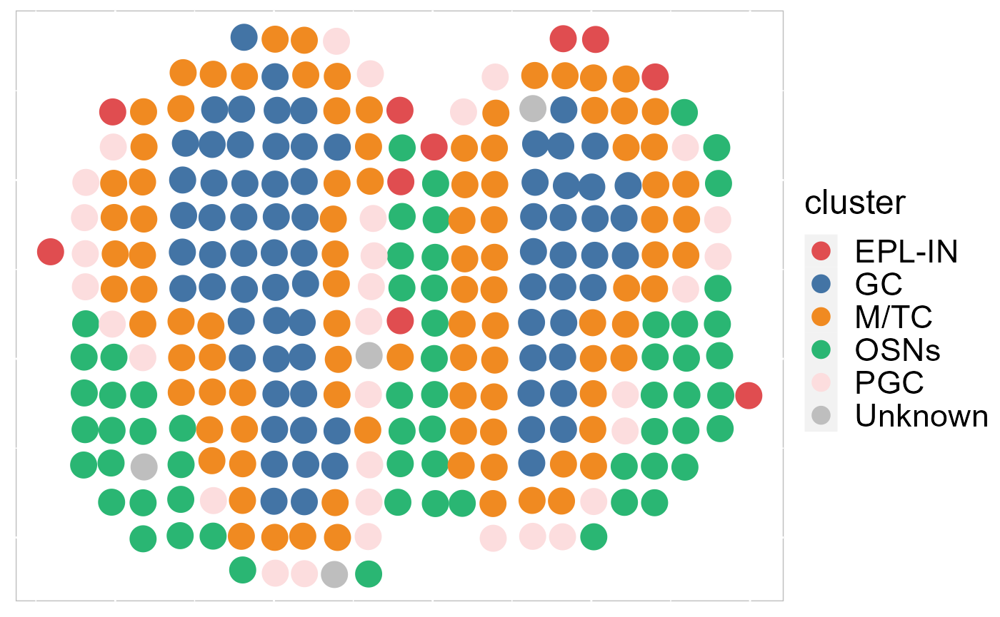
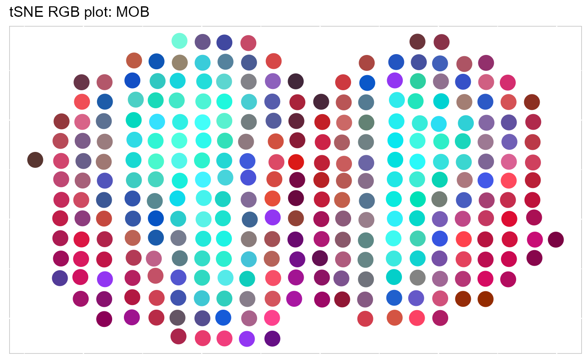
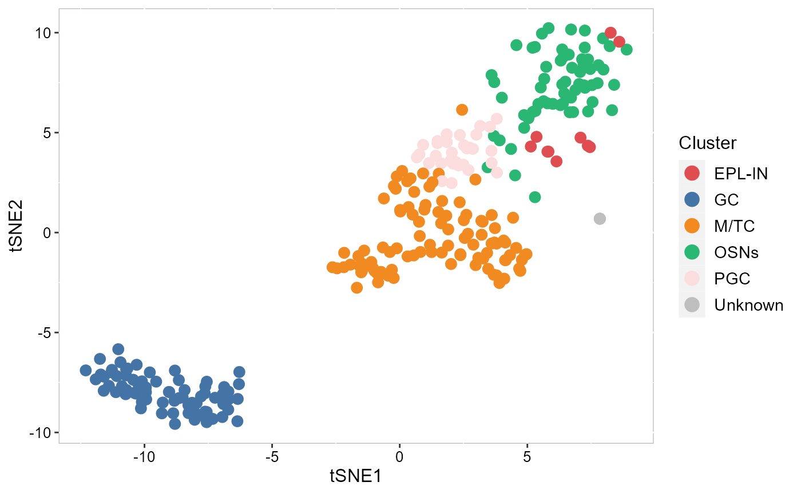
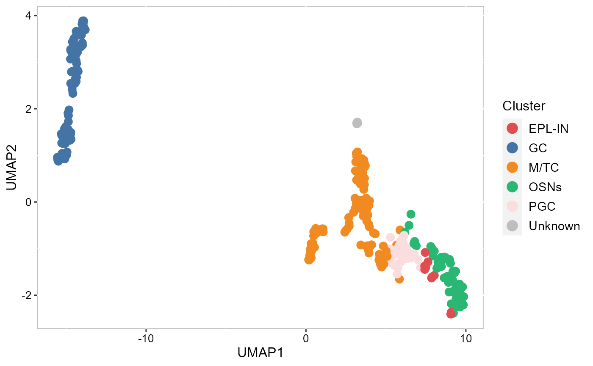
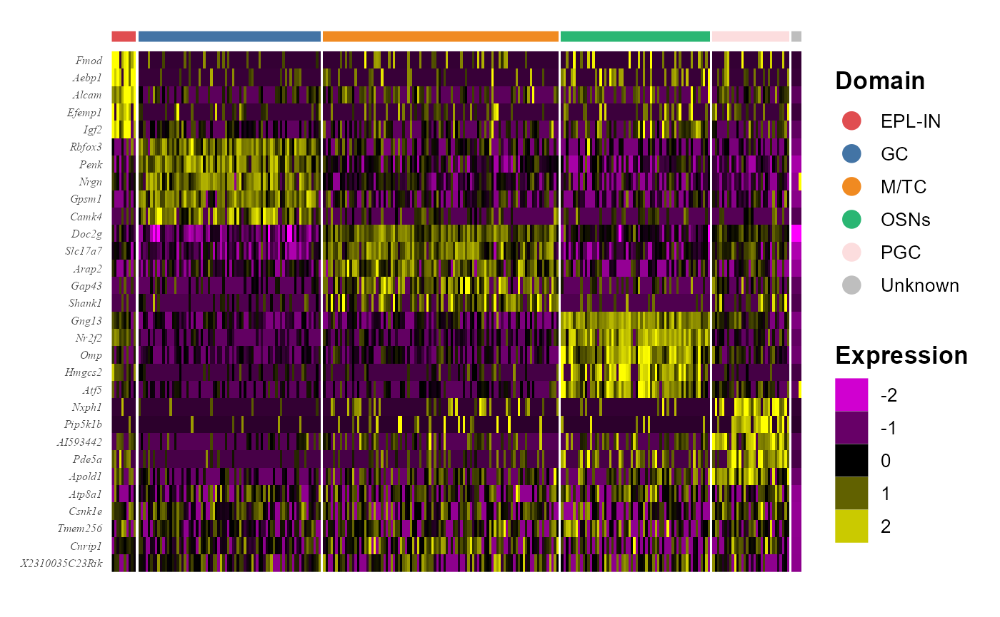

This tutorial demonstrates how to use SRTpipeline (>=0.1.0) to automatically annotate a spatially-resolved transcriptomics (SRT) data. The analytical pipelines are similar to the SRTpipeline workflow in DR-SC model vegenettes. We emphases how to use SpatialAnno model to achieve spatial embedding and annotation and its followed applications. This tutorial will cover the following tasks, which we believe will be common for many spatial analyses:
First, we load SRTpipeline.
We obtained the mouse olfactory bulb (OB) ST data from the spatial transcriptomics research website (https://www.spatialresearch.org/). This data consists of gene expression levels in form of read counts which are collected for a number of spatial locations. We followed to focus on the mouse OB section 12, which contains 16,034 genes and 282 spatial locations. The gene expression of mouse OB section 12 and ground truth are both stored in the R package SpatialAnno.
First, we load the MOB dataset and extract the position of each spot from spot name. The four anatomic layers manually annotated based on H&E staining was taken as ground truth.
library(SpatialAnno)
load(paste0(path.package("SpatialAnno"), "/extdata/Rep12_MOB_count_matrix-1.RData"))
print(MOB_raw[1:6,1:6])## 6 x 6 sparse Matrix of class "dgCMatrix"
## 16.918x16.996 18.017x17.034 20.075x17.059 18.979x17.065 21.937x16.967
## Plekha1 5 1 . . 1
## Cnih3 1 1 1 . .
## Gpc5 1 . . . .
## Sirt3 2 1 . . .
## Rab8a 5 1 . . 1
## Nadk 1 1 . 1 1
## 20.899x17.015
## Plekha1 .
## Cnih3 1
## Gpc5 1
## Sirt3 .
## Rab8a .
## Nadk .
pos = cbind.data.frame(x=as.numeric(sapply(strsplit(colnames(MOB_raw),split="x"),"[",1)),
y=as.numeric(sapply(strsplit(colnames(MOB_raw),split="x"),"[",2)))
head(pos)## x y
## 1 16.918 16.996
## 2 18.017 17.034
## 3 20.075 17.059
## 4 18.979 17.065
## 5 21.937 16.967
## 6 20.899 17.015
load(paste0(path.package("SpatialAnno"), "/extdata/Rep12_MOB_manual_annotation.RData"))
y2 = Rep12_MOB_manual_annotation
y2[y2=="GCL"] = "GC"
y2[y2=="MCL"] = "M/TC"
y2[y2=="ONL"] = "OSNs"
y2[y2=="GL"] = "PGC"
table(y2)## y2
## GC M/TC OSNs PGC Unknown
## 68 75 55 80 4First, we show how to create a SRTProject object step by step.
## create count matrix list: note each component has a name, i.e., `MOB`.
cntList <- list(MOB=MOB_raw)
## create spatial coordinate matrix
row.names(pos) <- colnames(MOB_raw)
coordList <- list(pos)
## create metadata list
meta.data <- data.frame(manual_annotation=y2)
row.names(meta.data) <- colnames(MOB_raw)
metadataList <- list(meta.data)
## create meta data for each data batches. Here we only have one data batch.
sampleMetadata <- data.frame(species="Mouse", tissues=c('Olfactory bulb'))
row.names(sampleMetadata) <- names(cntList)
## Name of this project
projectName <- "MOB"
rm(MOB_raw)Next, we start creating SRTProject object. We can print the basic information of this object, including three parts. The first part have the class of this object, outputPath of data that require to output, h5filePath that save the memory-cusuming data (i.e., count, logcount, …). The second part is about the datasets basic information, such as how many data batches(sample) and the data names, sample meta data (sampleColData) and meta data for each spot (cellMetaData). The last part is about downstream analyses information that is empty when this object created.
SRTProj <- CreateSRTProject(cntList, coordList, projectName =projectName, cellMetaDataList=metadataList,
sampleMetadata=sampleMetadata)## Loading required package: rhdf5## Loading required package: S4Vectors## Loading required package: stats4## Loading required package: BiocGenerics##
## Attaching package: 'BiocGenerics'## The following objects are masked from 'package:stats':
##
## IQR, mad, sd, var, xtabs## The following objects are masked from 'package:base':
##
## anyDuplicated, append, as.data.frame, basename, cbind, colnames,
## dirname, do.call, duplicated, eval, evalq, Filter, Find, get, grep,
## grepl, intersect, is.unsorted, lapply, Map, mapply, match, mget,
## order, paste, pmax, pmax.int, pmin, pmin.int, Position, rank,
## rbind, Reduce, rownames, sapply, setdiff, sort, table, tapply,
## union, unique, unsplit, which.max, which.min##
## Attaching package: 'S4Vectors'## The following objects are masked from 'package:base':
##
## expand.grid, I, unname## Warning: package 'ff' was built under R version 4.1.3## ****Remove the unshared genes for all batches...## ****Filter out 0 genes for 1 this data batch.## ****To differ the spots across data batch,
## ****revise the name of each spot in each data batch by adding the name of each data batch## ****Filter out 0 spots for 1 data batches, respectively## 2023-02-14 09:26:43 : **** Data check and preprocessing, 0.027 mins elapsed.## Loading required package: hdf5r##
## Attaching package: 'hdf5r'## The following object is masked from 'package:S4Vectors':
##
## values## The following object is masked from 'package:rhdf5':
##
## h5version## You created a large dataset with compression and chunking.
## The chunk size is equal to the dataset dimensions.
## If you want to read subsets of the dataset, you should testsmaller chunk sizes to improve read times.
## You created a large dataset with compression and chunking.
## The chunk size is equal to the dataset dimensions.
## If you want to read subsets of the dataset, you should testsmaller chunk sizes to improve read times.## 2023-02-14 09:26:45 : **** Write count and meta information into MOB.h5 file, 0.024 mins elapsed.## Getting Sample Metadata...## Getting Cell Metadata...## Getting Spatial Coordinates...## 2023-02-14 09:26:45 : **** Read meta information from MOB.h5 file, 0.001 mins elapsed.## Initializing SRTProject...
SRTProj## .oooooo..o ooooooooo. ooooooooooooo o8o oooo o8o
## d8P' `Y8 `888 `Y88. 8' 888 `8 `'' `888 `''
## Y88bo. 888 .d88' 888 oo.ooooo. oooo oo.ooooo. .ooooo. 888 oooo ooo. .oo. .ooooo.
## `'Y8888o. 888ooo88P' 888 888' `88b `888 888' `88b d88' `88b 888 `888 `888P'Y88b d88' `88b
## ``Y88b888` 88b. 888 888 888 888 888 888 888ooo888 888 888 888 888 888ooo888
## oo .d8P 888 `88b. 888 888 888 888 888 888 888 .o 888 888 888 888 888 .o
## 8''88888P' o888o o888o o888o 888bod8P' o888o 888bod8P' `Y8bod8P' o888o o888o o888o o888o `Y8bod8P'
## 888 888
## o888o o888o## class: SRTProject
## outputPath: F:\Research paper\IntegrateDRcluster\AnalysisCode\SRTpipeline\vignettes\MOB
## h5filePath: F:\Research paper\IntegrateDRcluster\AnalysisCode\SRTpipeline\vignettes\MOB/MOB.h5
## ---------Datasets basic information-----------------
## samples(1): MOB
## sampleColData names(3): species tissues NumOfSpots
## cellMetaData names(2): manual_annotation batch
## numberOfSpots(1): 282
## ---------Downstream analyses information-----------------
## Low-dimensional embeddings(0):
## Inferred cluster labels: No
## Embedding for plotting(0):Then we read the cell-type-specific marker information and construct a cell type marker matrix. Top four DEGs of the scRNA-seq data from Gene Expression Omnibus (GEO;accession number GSE121891) are selected as markers based on log-fold change.
marker <- vector("list", 5)
names(marker) = c("GC", "PGC", "M/TC", "OSNs", "EPL-IN")
marker[[1]] = c("Gria2", "Meis2", "Prkca", "Penk")
marker[[2]] = c("Nppa", "Nrsn1", "Nxph1", "Th")
marker[[3]] = c("Cdhr1", "Slc17a7", "Olfm1", "Reln")
marker[[4]] = c("Gng13", "S100a5", "Omp", "Fam213b")
marker[[5]] = c("Kit", "Thy1", "Dner", "Spock2")
head(marker)## $GC
## [1] "Gria2" "Meis2" "Prkca" "Penk"
##
## $PGC
## [1] "Nppa" "Nrsn1" "Nxph1" "Th"
##
## $`M/TC`
## [1] "Cdhr1" "Slc17a7" "Olfm1" "Reln"
##
## $OSNs
## [1] "Gng13" "S100a5" "Omp" "Fam213b"
##
## $`EPL-IN`
## [1] "Kit" "Thy1" "Dner" "Spock2"After creating the SRTProject, the next step is to normalize the data. To save RAM memory, normalized values are stored in disk as a h5file.
SRTProj <- normalizeSRT(SRTProj)## Loading required package: Seurat## Warning: package 'Seurat' was built under R version 4.1.3## Attaching SeuratObject## Attaching sp## Loading required package: Matrix##
## Attaching package: 'Matrix'## The following object is masked from 'package:S4Vectors':
##
## expand## You created a large dataset with compression and chunking.
## The chunk size is equal to the dataset dimensions.
## If you want to read subsets of the dataset, you should testsmaller chunk sizes to improve read times.
## You created a large dataset with compression and chunking.
## The chunk size is equal to the dataset dimensions.
## If you want to read subsets of the dataset, you should testsmaller chunk sizes to improve read times.## 2023-02-14 09:26:48 : ****** Finish normalization for sample 1, 0.043 mins elapsed.We next select a subset of genes that exhibit high spot-to-spot variation in the dataset (i.e, they are highly expressed in some spots, and lowly expressed in others). It has been found that focusing on these genes in downstream analysis helps to highlight biological signal in single-cell datasets here. In annotaion task, we found the variable features by exluding the marker gene list. The SpatialAnno model will use the selected variable features plus the marker gene list in the moelling process.
## Check the features names
row.names(SRTProj@geneMetaData)[1:10]## [1] "Plekha1" "Cnih3" "Gpc5" "Sirt3" "Rab8a" "Nadk" "Tiparp"
## [8] "Fbxo28" "Rgl1" "Ctsb"
SRTProj <- selectVariableFeatures(SRTProj, nfeatures = 2000, exclude_features = unlist(marker))## Find variable genes for sample MOB## 2023-02-14 09:26:52 : ****** Select HVGs(variable features) for each data batch using vst method, 0.067 mins elapsed.## 2023-02-14 09:26:52 : ****** Prioritize HVGs based on the number of times they were selected in all data batches, 0 mins elapsed.
head(SRTProj@geneMetaData)## DataFrame with 6 rows and 3 columns
## isVGs#combine isHVGs#MOB rankHVGs#MOB
## <logical> <logical> <logical>
## Plekha1 TRUE TRUE NA
## Cnih3 FALSE FALSE NA
## Gpc5 FALSE FALSE NA
## Sirt3 FALSE FALSE NA
## Rab8a FALSE FALSE NA
## Nadk FALSE FALSE NANext, we define the neighbors for each spot by the spatial coordinates, which is represented by a sparse adjacency matrix (AdjMat) saved in the h5file. Because here the spatialcoordinates is not integer, we use general method to find the neighbors by setting the platform = 'Other'. We can check the saved sparse adjacency matrix using h5ls().
head(SRTProj@spatialCoords)## DataFrame with 6 rows and 2 columns
## V1 V2
## <numeric> <numeric>
## 1 16.918 16.996
## 2 18.017 17.034
## 3 20.075 17.059
## 4 18.979 17.065
## 5 21.937 16.967
## 6 20.899 17.015
## Obtain adjacence matrix
SRTProj <- AddAdj(SRTProj, platform = "Other")## Find the adjacency matrix by bisection method...## Current radius is 10.87## Median of neighborhoods is 2## Current radius is 5.93## Median of neighborhoods is 184## Current radius is 3.47## Median of neighborhoods is 78.5## Current radius is 2.23## Median of neighborhoods is 33## Current radius is 1.62## Median of neighborhoods is 15## Current radius is 1.31## Median of neighborhoods is 8## Current radius is 1.31## Median of neighborhoods is 4## 2023-02-14 09:26:52 : ****** Write adjacency matrices to MOB.h5 file, 0.003 mins elapsed.
h5ls(SRTProj@projectMetadata$h5filePath)## group name otype dclass dim
## 0 / AdjMat H5I_GROUP
## 1 /AdjMat AdjMat_1 H5I_GROUP
## 2 /AdjMat/AdjMat_1 Dim H5I_DATASET INTEGER 2
## 3 /AdjMat/AdjMat_1 data H5I_DATASET FLOAT 1110
## 4 /AdjMat/AdjMat_1 indices H5I_DATASET INTEGER 1110
## 5 /AdjMat/AdjMat_1 indptr H5I_DATASET INTEGER 283
## 6 / SpatialCoords H5I_DATASET FLOAT 282 x 2
## 7 / cellMetaData H5I_DATASET STRING 282
## 8 / count H5I_GROUP
## 9 /count count_1 H5I_GROUP
## 10 /count/count_1 Dim H5I_DATASET INTEGER 2
## 11 /count/count_1 cellNames H5I_DATASET STRING 282
## 12 /count/count_1 data H5I_DATASET FLOAT 1263280
## 13 /count/count_1 geneNames H5I_DATASET STRING 16034
## 14 /count/count_1 indices H5I_DATASET INTEGER 1263280
## 15 /count/count_1 indptr H5I_DATASET INTEGER 283
## 16 / data H5I_GROUP
## 17 /data data_1 H5I_GROUP
## 18 /data/data_1 Dim H5I_DATASET INTEGER 2
## 19 /data/data_1 cellNames H5I_DATASET STRING 282
## 20 /data/data_1 data H5I_DATASET FLOAT 1263280
## 21 /data/data_1 geneNames H5I_DATASET STRING 16034
## 22 /data/data_1 indices H5I_DATASET INTEGER 1263280
## 23 /data/data_1 indptr H5I_DATASET INTEGER 283
## 24 / sampleMetadata H5I_DATASET COMPOUND 1
## 25 / samplenames H5I_DATASET STRING 1We fit the SpatialAnno model by using the top 2000 HVGs. Users can also use the top SVGs since we found the performance of using SVGs or HVGs has no significant difference for the downstream analyses, such as dimension reduction and spatial annotation.
Afeter finishing fitting, the SRTProject SRTProj has two more downstream analyses information: the low-dimensional embeddings SpatialAnno and inferred cell types, and they are saved in SRTProj@reductions$SpatialAnno and SRTProj@clusters, respectively.
### Given K
SRTProj <- Annotation_SpatialAnno(SRTProj, markers = marker, q=15, wpca_int=F)## iter = 2, loglik= -752044.469314, dloglik=0.999650
## iter = 3, loglik= -751469.479497, dloglik=0.000765
## iter = 4, loglik= -751217.140580, dloglik=0.000336
## iter = 5, loglik= -751151.965403, dloglik=0.000087
## iter = 6, loglik= -751113.862506, dloglik=0.000051
## iter = 7, loglik= -751086.893476, dloglik=0.000036
## iter = 8, loglik= -751062.423871, dloglik=0.000033
## iter = 9, loglik= -751043.503935, dloglik=0.000025
## iter = 10, loglik= -751029.662131, dloglik=0.000018
## iter = 11, loglik= -751025.199029, dloglik=0.000006
SRTProj## .oooooo..o ooooooooo. ooooooooooooo o8o oooo o8o
## d8P' `Y8 `888 `Y88. 8' 888 `8 `'' `888 `''
## Y88bo. 888 .d88' 888 oo.ooooo. oooo oo.ooooo. .ooooo. 888 oooo ooo. .oo. .ooooo.
## `'Y8888o. 888ooo88P' 888 888' `88b `888 888' `88b d88' `88b 888 `888 `888P'Y88b d88' `88b
## ``Y88b888` 88b. 888 888 888 888 888 888 888ooo888 888 888 888 888 888ooo888
## oo .d8P 888 `88b. 888 888 888 888 888 888 888 .o 888 888 888 888 888 .o
## 8''88888P' o888o o888o o888o 888bod8P' o888o 888bod8P' `Y8bod8P' o888o o888o o888o o888o `Y8bod8P'
## 888 888
## o888o o888o## class: SRTProject
## outputPath: F:\Research paper\IntegrateDRcluster\AnalysisCode\SRTpipeline\vignettes\MOB
## h5filePath: F:\Research paper\IntegrateDRcluster\AnalysisCode\SRTpipeline\vignettes\MOB/MOB.h5
## ---------Datasets basic information-----------------
## samples(1): MOB
## sampleColData names(3): species tissues NumOfSpots
## cellMetaData names(2): manual_annotation batch
## numberOfSpots(1): 282
## ---------Downstream analyses information-----------------
## Variable features: 2000
## Low-dimensional embeddings(1): SpatialAnno
## Inferred cluster labels: Yes
## Embedding for plotting(0):
table(SRTProj@clusters)##
## EPL-IN GC M/TC OSNs PGC Unknown
## 10 76 98 62 32 4Then, we visualize the spatial distribution of inferred cell types that shows the layer structure.
cols_cluster <- c(chooseColors(n=5), 'gray')## Loading required package: colorspace
EachClusterSpaHeatMap(SRTProj, cols=cols_cluster, legend.position='right', pt_size =6 ,base_size=16)## Loading required package: dplyr## Warning: package 'dplyr' was built under R version 4.1.3##
## Attaching package: 'dplyr'## The following objects are masked from 'package:S4Vectors':
##
## first, intersect, rename, setdiff, setequal, union## The following objects are masked from 'package:BiocGenerics':
##
## combine, intersect, setdiff, union## The following objects are masked from 'package:stats':
##
## filter, lag## The following objects are masked from 'package:base':
##
## intersect, setdiff, setequal, union## Loading required package: ggplot2## Warning: package 'ggplot2' was built under R version 4.1.3
Calculate the 3-dimensional tSNEs based on the extracted features from SpatialAnno.
SRTProj <- AddTSNE(SRTProj, n_comp = 3, reduction = 'SpatialAnno')We visualize the 3-dimensional tSNEs on the spatial coordinates using RGB colors. We can see there are apparent spatial pattern for the embeddings. Users can also plot the 3-dimensional UMAP RGB plot similarly.
EachRGBSpaHeatMap(SRTProj, plot_type ='tSNE', title_name = "tSNE RGB plot: ", pt_size=6)
Visualize the inferred cell types on the tSNE or UMAP.
SRTProj <- AddTSNE(SRTProj, n_comp = 2, reduction='SpatialAnno')
p_tsne2 <- EmbedPlot(SRTProj, item='cluster', plotEmbeddings = 'tSNE', cols=cols_cluster,
pt_size=3, legend.position='right')
p_tsne2
SRTProj <- AddUMAP(SRTProj, n_comp = 2, reduction='SpatialAnno')
p_umap2 <- EmbedPlot(SRTProj, item='cluster', plotEmbeddings = 'UMAP',
cols=cols_cluster, pt_size=3, legend.position='right')
p_umap2
To do downstream analyses, we require to get the count data from h5file. The function getGeneSpotData() access the gene-by-spot count matrix and other data in SRTProj and then return a SpatialExperiment object.
spe <- getGeneSpotData(SRTProj)## Loading required package: SpatialExperiment## Loading required package: SingleCellExperiment## Loading required package: SummarizedExperiment## Loading required package: MatrixGenerics## Loading required package: matrixStats## Warning: package 'matrixStats' was built under R version 4.1.3##
## Attaching package: 'matrixStats'## The following object is masked from 'package:dplyr':
##
## count##
## Attaching package: 'MatrixGenerics'## The following objects are masked from 'package:matrixStats':
##
## colAlls, colAnyNAs, colAnys, colAvgsPerRowSet, colCollapse,
## colCounts, colCummaxs, colCummins, colCumprods, colCumsums,
## colDiffs, colIQRDiffs, colIQRs, colLogSumExps, colMadDiffs,
## colMads, colMaxs, colMeans2, colMedians, colMins, colOrderStats,
## colProds, colQuantiles, colRanges, colRanks, colSdDiffs, colSds,
## colSums2, colTabulates, colVarDiffs, colVars, colWeightedMads,
## colWeightedMeans, colWeightedMedians, colWeightedSds,
## colWeightedVars, rowAlls, rowAnyNAs, rowAnys, rowAvgsPerColSet,
## rowCollapse, rowCounts, rowCummaxs, rowCummins, rowCumprods,
## rowCumsums, rowDiffs, rowIQRDiffs, rowIQRs, rowLogSumExps,
## rowMadDiffs, rowMads, rowMaxs, rowMeans2, rowMedians, rowMins,
## rowOrderStats, rowProds, rowQuantiles, rowRanges, rowRanks,
## rowSdDiffs, rowSds, rowSums2, rowTabulates, rowVarDiffs, rowVars,
## rowWeightedMads, rowWeightedMeans, rowWeightedMedians,
## rowWeightedSds, rowWeightedVars## Loading required package: GenomicRanges## Loading required package: IRanges##
## Attaching package: 'IRanges'## The following objects are masked from 'package:dplyr':
##
## collapse, desc, slice## The following object is masked from 'package:sp':
##
## %over%## The following object is masked from 'package:grDevices':
##
## windows## Loading required package: GenomeInfoDb## Loading required package: Biobase## Welcome to Bioconductor
##
## Vignettes contain introductory material; view with
## 'browseVignettes()'. To cite Bioconductor, see
## 'citation("Biobase")', and for packages 'citation("pkgname")'.##
## Attaching package: 'Biobase'## The following object is masked from 'package:MatrixGenerics':
##
## rowMedians## The following objects are masked from 'package:matrixStats':
##
## anyMissing, rowMedians##
## Attaching package: 'SummarizedExperiment'## The following object is masked from 'package:SeuratObject':
##
## Assays## The following object is masked from 'package:Seurat':
##
## Assays
spe## class: SpatialExperiment
## dim: 16034 282
## metadata(0):
## assays(2): counts logcounts
## rownames(16034): Plekha1 Cnih3 ... St14 Gdf5
## rowData names(3): isVGs.combine isHVGs.MOB rankHVGs.MOB
## colnames(282): MOB#16.918x16.996 MOB#18.017x17.034 ...
## MOB#25.134x28.934 MOB#29.961x18.97
## colData names(4): manual_annotation batch clusters sample_id
## reducedDimNames(5): SpatialAnno tSNE3 tSNE UMAP Coord
## mainExpName: NULL
## altExpNames(0):
## spatialData names(0) :
## spatialCoords names(2) : V1 V2
## imgData names(0):We perform differential expression analysis for all clusters by using FindAllDEGs() function, then the DE genes’ information is saved in a DataFrame object dat_degs.
dat_degs <- FindAllDEGs(spe, use_cluster = 'clusters')## 2023-02-14 09:27:10 : ****** Start finding marker genes...## Calculating cluster EPL-IN## Calculating cluster GC## Calculating cluster M/TC## Calculating cluster OSNs## Calculating cluster PGC## Calculating cluster Unknown## 2023-02-14 09:27:46 : ****** Finish finding marker genes, 0.603 mins elapsed.
dat_degs## DataFrame with 3347 rows and 7 columns
## p_val avg_log2FC pct.1 pct.2 p_val_adj cluster
## <numeric> <numeric> <numeric> <numeric> <numeric> <factor>
## Tspan8 1.92140e-20 0.413781 0.4 0.004 3.08077e-16 EPL-IN
## Clec3b 7.67177e-16 0.485016 0.5 0.018 1.23009e-11 EPL-IN
## Chek1 1.64141e-13 0.252318 0.2 0.000 2.63184e-09 EPL-IN
## Fgfbp1 8.65072e-12 0.567707 0.6 0.051 1.38706e-07 EPL-IN
## Smpdl3b 4.86295e-10 0.295957 0.3 0.011 7.79726e-06 EPL-IN
## ... ... ... ... ... ... ...
## Hectd1 0.00994409 -0.821458 0 0.745 1 Unknown
## Fgfr1 0.00994409 -0.825079 0 0.745 1 Unknown
## Zfp704 0.00994409 -0.828357 0 0.745 1 Unknown
## Cnot7 0.00994409 -0.844428 0 0.745 1 Unknown
## Dio2.3 0.00994409 -0.866538 0 0.745 1 Unknown
## gene
## <character>
## Tspan8 Tspan8
## Clec3b Clec3b
## Chek1 Chek1
## Fgfbp1 Fgfbp1
## Smpdl3b Smpdl3b
## ... ...
## Hectd1 Hectd1
## Fgfr1 Fgfr1
## Zfp704 Zfp704
## Cnot7 Cnot7
## Dio2.3 Dio2We identify the significant DE genes by two criteria: (a) adjustd p-value less than 0.01 and (b) average log fold change greater than 0.4.
degs_sig <- subset(dat_degs, p_val_adj < 0.01 & avg_log2FC>0.5)
degs_sig## DataFrame with 118 rows and 7 columns
## p_val avg_log2FC pct.1 pct.2 p_val_adj cluster
## <numeric> <numeric> <numeric> <numeric> <numeric> <factor>
## Fgfbp1 8.65072e-12 0.567707 0.6 0.051 1.38706e-07 EPL-IN
## Fmod 5.88749e-09 0.850051 0.9 0.217 9.44001e-05 EPL-IN
## Prss56 2.14120e-08 0.618173 0.8 0.151 3.43320e-04 EPL-IN
## Aebp1 2.17723e-08 0.801152 0.9 0.250 3.49096e-04 EPL-IN
## Myof 2.97383e-08 0.517158 0.6 0.081 4.76824e-04 EPL-IN
## ... ... ... ... ... ... ...
## Nxph1.1 2.09285e-14 0.613144 0.719 0.172 3.35567e-10 PGC
## Pip5k1b 2.38307e-14 0.535098 0.656 0.120 3.82101e-10 PGC
## AI593442.1 4.78346e-13 0.686870 0.906 0.412 7.66980e-09 PGC
## Pde5a.1 3.60833e-11 0.583596 0.812 0.312 5.78560e-07 PGC
## Apold1.1 1.57576e-09 0.575961 0.938 0.548 2.52658e-05 PGC
## gene
## <character>
## Fgfbp1 Fgfbp1
## Fmod Fmod
## Prss56 Prss56
## Aebp1 Aebp1
## Myof Myof
## ... ...
## Nxph1.1 Nxph1
## Pip5k1b Pip5k1b
## AI593442.1 AI593442
## Pde5a.1 Pde5a
## Apold1.1 Apold1We visualize the DE genes for each cell type group by gene-by-cell heatmap using the GCHeatMap() function.
library(dplyr)
n <- 5
dat_degs %>% as.data.frame %>%
group_by(cluster) %>%
top_n(n = n, wt = avg_log2FC) -> topGene
p1 <- GCHeatMap(spe, features=topGene$gene, grp_color=cols_cluster ,y_text_size=6, ncol.legend=1)
p1
Session Info
## R version 4.1.2 (2021-11-01)
## Platform: x86_64-w64-mingw32/x64 (64-bit)
## Running under: Windows 10 x64 (build 22621)
##
## Matrix products: default
##
## locale:
## [1] LC_COLLATE=Chinese (Simplified)_China.936
## [2] LC_CTYPE=Chinese (Simplified)_China.936
## [3] LC_MONETARY=Chinese (Simplified)_China.936
## [4] LC_NUMERIC=C
## [5] LC_TIME=Chinese (Simplified)_China.936
##
## attached base packages:
## [1] stats4 stats graphics grDevices utils datasets methods
## [8] base
##
## other attached packages:
## [1] SpatialExperiment_1.4.0 SingleCellExperiment_1.16.0
## [3] SummarizedExperiment_1.24.0 Biobase_2.54.0
## [5] GenomicRanges_1.46.1 GenomeInfoDb_1.30.1
## [7] IRanges_2.28.0 MatrixGenerics_1.6.0
## [9] matrixStats_0.62.0 ggplot2_3.3.6
## [11] dplyr_1.0.9 colorspace_2.0-3
## [13] Matrix_1.4-0 sp_1.5-0
## [15] SeuratObject_4.1.0 Seurat_4.1.1
## [17] hdf5r_1.3.5 ff_4.0.7
## [19] bit_4.0.4 S4Vectors_0.32.3
## [21] BiocGenerics_0.40.0 rhdf5_2.38.0
## [23] SpatialAnno_1.0.0 mclust_5.4.10
## [25] SRTpipeline_0.1.1
##
## loaded via a namespace (and not attached):
## [1] scattermore_0.8 ggthemes_4.2.4
## [3] R.methodsS3_1.8.1 GiRaF_1.0.1
## [5] ragg_1.2.2 tidyr_1.2.0
## [7] bit64_4.0.5 knitr_1.37
## [9] irlba_2.3.5 DelayedArray_0.20.0
## [11] R.utils_2.11.0 data.table_1.14.2
## [13] rpart_4.1.16 RCurl_1.98-1.6
## [15] generics_0.1.2 ScaledMatrix_1.2.0
## [17] cowplot_1.1.1 RANN_2.6.1
## [19] future_1.26.1 spatstat.data_3.0-0
## [21] httpuv_1.6.5 assertthat_0.2.1
## [23] viridis_0.6.2 xfun_0.29
## [25] jquerylib_0.1.4 evaluate_0.15
## [27] promises_1.2.0.1 fansi_1.0.3
## [29] igraph_1.3.5 DBI_1.1.2
## [31] htmlwidgets_1.5.4 spatstat.geom_2.4-0
## [33] purrr_0.3.4 ellipsis_0.3.2
## [35] RSpectra_0.16-1 ggpubr_0.4.0
## [37] backports_1.4.1 DR.SC_3.1
## [39] deldir_1.0-6 sparseMatrixStats_1.6.0
## [41] vctrs_0.4.1 ROCR_1.0-11
## [43] abind_1.4-5 cachem_1.0.6
## [45] withr_2.5.0 PRECAST_1.4
## [47] progressr_0.10.1 sctransform_0.3.3
## [49] goftest_1.2-3 cluster_2.1.2
## [51] lazyeval_0.2.2 crayon_1.5.1
## [53] edgeR_3.36.0 pkgconfig_2.0.3
## [55] labeling_0.4.2 nlme_3.1-155
## [57] vipor_0.4.5 rlang_1.0.2
## [59] globals_0.15.0 lifecycle_1.0.1
## [61] miniUI_0.1.1.1 rsvd_1.0.5
## [63] rprojroot_2.0.3 polyclip_1.10-0
## [65] lmtest_0.9-40 carData_3.0-5
## [67] Rhdf5lib_1.16.0 zoo_1.8-10
## [69] beeswarm_0.4.0 ggridges_0.5.3
## [71] rjson_0.2.21 png_0.1-7
## [73] viridisLite_0.4.0 bitops_1.0-7
## [75] R.oo_1.24.0 KernSmooth_2.23-20
## [77] rhdf5filters_1.6.0 DelayedMatrixStats_1.16.0
## [79] stringr_1.4.0 parallelly_1.32.0
## [81] spatstat.random_2.2-0 rstatix_0.7.0
## [83] ggsignif_0.6.3 beachmat_2.10.0
## [85] scales_1.2.0 memoise_2.0.1
## [87] magrittr_2.0.3 plyr_1.8.7
## [89] ica_1.0-2 zlibbioc_1.40.0
## [91] compiler_4.1.2 dqrng_0.3.0
## [93] scSorter_0.0.2 RColorBrewer_1.1-3
## [95] fitdistrplus_1.1-8 cli_3.2.0
## [97] XVector_0.34.0 listenv_0.8.0
## [99] patchwork_1.1.1 pbapply_1.5-0
## [101] MASS_7.3-55 mgcv_1.8-39
## [103] tidyselect_1.1.2 stringi_1.7.6
## [105] textshaping_0.3.6 highr_0.9
## [107] yaml_2.3.6 BiocSingular_1.10.0
## [109] locfit_1.5-9.4 ggrepel_0.9.1
## [111] grid_4.1.2 sass_0.4.1
## [113] tools_4.1.2 future.apply_1.9.0
## [115] parallel_4.1.2 rstudioapi_0.13
## [117] gridExtra_2.3 farver_2.1.0
## [119] Rtsne_0.16 DropletUtils_1.14.2
## [121] digest_0.6.29 rgeos_0.5-9
## [123] FNN_1.1.3.1 shiny_1.7.1
## [125] Rcpp_1.0.10 car_3.0-12
## [127] broom_0.7.12 scuttle_1.4.0
## [129] later_1.3.0 RcppAnnoy_0.0.19
## [131] httr_1.4.3 fs_1.5.2
## [133] tensor_1.5 reticulate_1.25
## [135] splines_4.1.2 uwot_0.1.11
## [137] spatstat.utils_3.0-1 pkgdown_2.0.6
## [139] scater_1.25.1 plotly_4.10.0
## [141] systemfonts_1.0.4 xtable_1.8-4
## [143] jsonlite_1.8.0 R6_2.5.1
## [145] pillar_1.7.0 htmltools_0.5.2
## [147] mime_0.12 glue_1.6.2
## [149] fastmap_1.1.0 BiocParallel_1.28.3
## [151] BiocNeighbors_1.12.0 codetools_0.2-18
## [153] utf8_1.2.2 lattice_0.20-45
## [155] bslib_0.3.1 spatstat.sparse_2.1-1
## [157] tibble_3.1.7 ggbeeswarm_0.6.0
## [159] leiden_0.4.2 gtools_3.9.2.2
## [161] magick_2.7.3 survival_3.2-13
## [163] limma_3.50.1 CompQuadForm_1.4.3
## [165] rmarkdown_2.11 desc_1.4.0
## [167] munsell_0.5.0 GenomeInfoDbData_1.2.7
## [169] HDF5Array_1.22.1 reshape2_1.4.4
## [171] gtable_0.3.0 spatstat.core_2.4-4